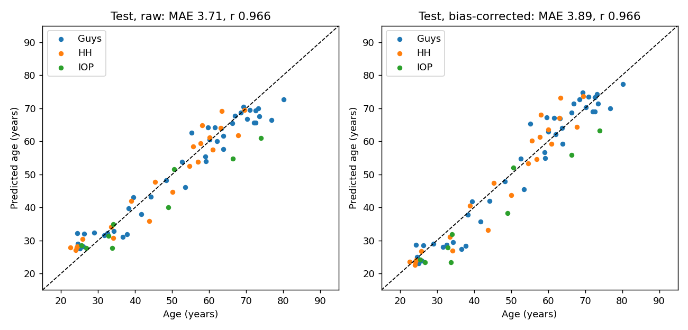
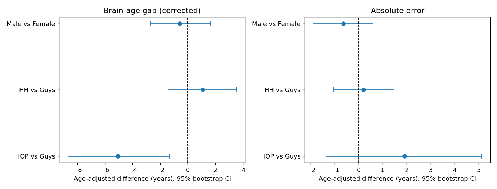
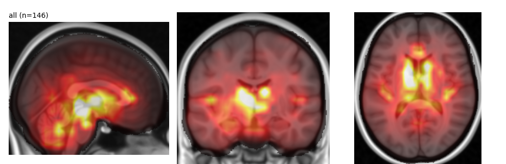
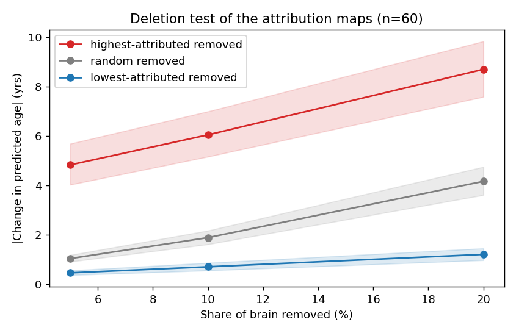
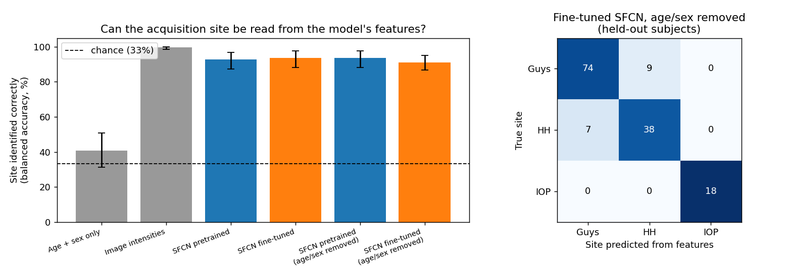
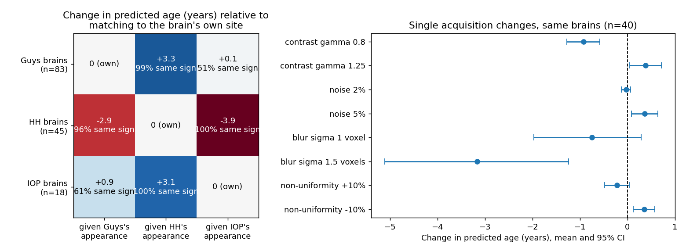
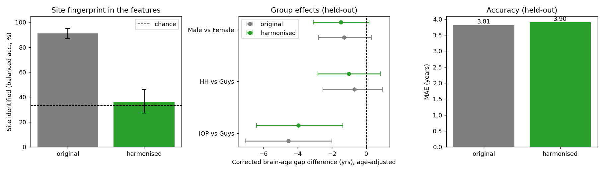
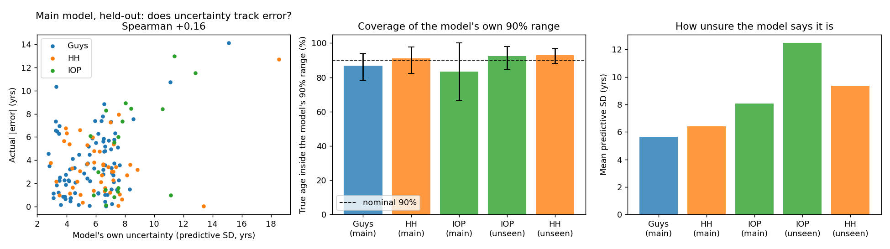
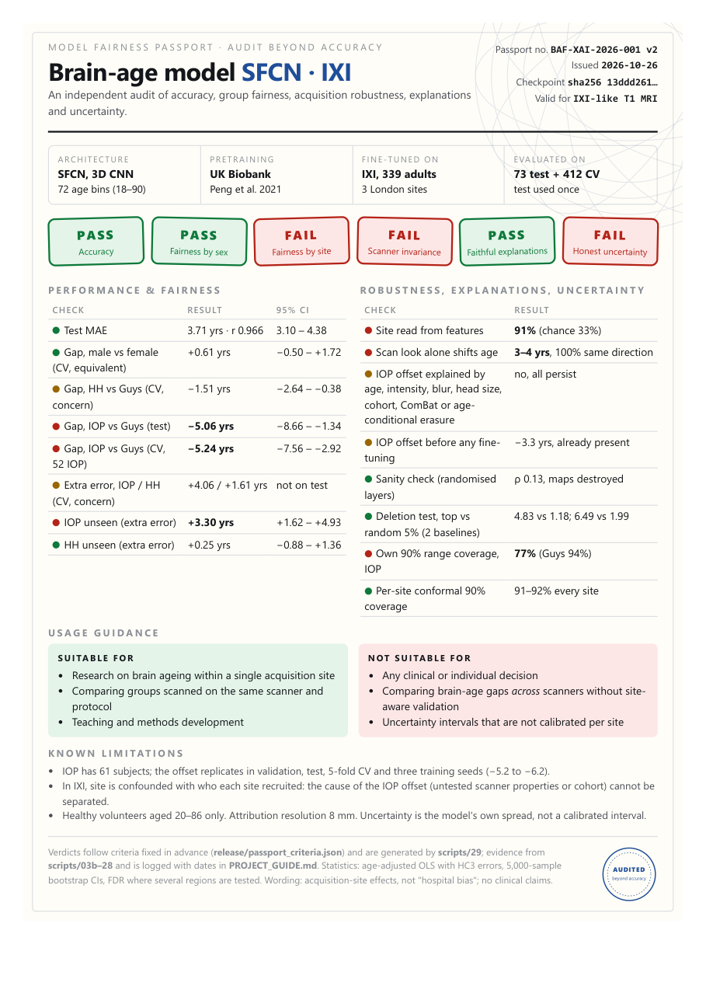

Everything from "what is brain age?" to the final verdict: the data, the model, every experiment, every number, why each step was done and what it means. No prior background needed. Read top to bottom: each part builds on the one before.
You have a real age (birthdays) and a biological brain age: how old your brain looks on a scan. With age the brain shrinks slightly, the fluid spaces (ventricles) grow, the surface folds (sulci) widen and the grey matter thins. An AI can learn these patterns from thousands of scans and then guess the age of a new scan.
Most papers check only one thing: is the AI accurate? But accuracy can hide shortcuts. A student can score 95% because the answers were always in the same position, then fail when the answers are shuffled.
AIs do this too. A real, famous example: an AI that detected pneumonia on chest X-rays was partly reading which hospital's machine took the X-ray, because one hospital had more sick patients.
A free public dataset of brain MRI scans from about 580 healthy volunteers aged 20 to 86. After removing duplicates, missing ages and failed scans we used 485 people. We used T1 scans, the standard "anatomy" scan in which tissue types appear as different shades of grey.
| Site | Scanner | Notes |
|---|---|---|
| Guys (Guy's Hospital) | Philips 1.5T | the largest group |
| HH (Hammersmith Hospital) | Philips 3T | stronger magnet |
| IOP (Institute of Psychiatry) | GE 1.5T | different manufacturer, smallest group, recruited younger people |
The ages first used in the project came from a wrong source file. We rebuilt them from the official IXI spreadsheet (files marked _OLD_wrong_labels are the old ones). A good point for the review: we checked our data instead of trusting it.
| Part | People | Like… | Used for |
|---|---|---|---|
| Train | 339 | the textbook | the AI learns from these |
| Validation | 73 | practice exams | choosing settings, fitting corrections |
| Test | 73 | the final exam | used exactly once, at the end |
The split was random and balanced by site, sex and age. If you peek at the final exam while studying, your score is fake, so we never tuned anything on the test set.
SFCN ("Simple Fully Convolutional Network", Peng et al. 2021) was trained on 14,000+ brains from UK Biobank, a huge British health study, and is one of the most accurate published brain-age models.
The original model covered only ages 42–82 (UK Biobank is middle-aged and older), but our people are 20–86. So we expanded the output to 18–90 and retrained it a little on our 339 people, like an experienced doctor learning a new hospital's machines.
| Version | Average mistake (MAE) |
|---|---|
| Original model, no retraining ("zero-shot", validation) | 10.2 years |
| After fine-tuning (final test) | 3.7 years |
All brain-age models regress to the mean: they guess old people a bit too young and young people a bit too old. The standard fix (Cole's method): on the validation set, fit the line predicted = 0.83 × real + 8.3, then undo it: corrected = (predicted − 8.3) / 0.83. Without this, groups of different ages would show fake gaps.
Test MAE 3.71 years (95% CI 3.10–4.38) and correlation with real age r = 0.97 (1.0 would be perfect), comparable to published results.

We compared brain-age gaps between groups while controlling for age: IOP recruited younger people and gaps change with age, so without this control we would wrongly blame the scanner.
| Comparison | Gap difference | 95% CI | Meaning |
|---|---|---|---|
| Male vs female | −0.6 yrs | −2.7 to +1.6 | includes 0 → no real difference ✅ |
| HH vs Guys | +1.1 yrs | −1.4 to +3.5 | includes 0 → fine ✅ |
| IOP vs Guys | −5.1 yrs | −8.7 to −1.3 | excludes 0 → real effect ❌ |
IOP brains are predicted about 5 years younger than they should be. It appears in both validation (−4.1) and test (−5.1), so it is not a fluke. We call it an acquisition-site effect, never "hospital bias": we have not shown that the hospital did anything wrong.

We trained the model without one hospital and tested it on that hospital, simulating "a new hospital starts using our AI".
| Left out | Extra error on that site | Meaning |
|---|---|---|
| IOP | +3.3 yrs (CI 1.6–4.9) | real damage: IOP scans are genuinely "different" to the model |
| HH | +0.25 yrs (CI −0.9–1.4) | fine |
A Grad-CAM-style heat map (HiResCAM variant) answers: which parts of the brain pushed the prediction most? Our maps highlight the ventricles, deep grey matter and the surrounding regions, which are biologically sensible ageing areas.

But heat maps can lie: some methods produce pretty pictures regardless of what the model learned. So we ran two honesty tests:
| Blurred 5% of the brain | Average age change |
|---|---|
| Most important (by map) | 4.8 years |
| Random regions | 1.0 years |
| Least important | 0.5 years |
The map really points at what drives the prediction (p = 5×10⁻¹¹ across 60 brains). Maps differed only slightly between groups, so the model looks at roughly the same places for everyone.

Test A: the site probe (the "detective"). We took the 64 internal numbers for each brain and trained a simple classifier to guess which hospital took the scan from those numbers alone. The model was only ever taught age; nobody gave it hospital information.
| What the detective sees | Correct guesses (balanced) |
|---|---|
| Just age and sex | 41% (≈ chance, which is 33%) |
| The model's 64 numbers | 93% |
| 64 numbers with age/sex information removed | 91% |

Test B: the scanner-look swap (stress test). We took one brain and changed only its look: its brightness and contrast profile was re-mapped to another hospital's typical profile, with the anatomy untouched. The comparison is fair: against the same brain given its own hospital's look. The hospital "looks" were built from training people only, adjusted to the same age and sex mix.
| Swap | Age change |
|---|---|
| HH brain → IOP look | −3.9 years |
| IOP brain → HH look | +3.1 years |
| Guys → IOP / IOP → Guys | +0.1 / +0.9 years |

We tried to explain IOP's offset and ruled things out one by one, like a detective:

Using the width of the age-probability peak:

| Check | Result | Evidence |
|---|---|---|
| Accuracy | PASS | MAE 3.7 yrs, r 0.97 |
| Fair by sex | PASS | −0.6 yrs, CI spans 0 |
| Fair by site | FAIL | IOP −5.1 yrs, CI excludes 0 |
| Intensity-swap invariance | FAIL | site readable 91%; look alone shifts 3–4 yrs |
| Faithful explanations | PASS | sanity check + deletion 4.8 vs 1.0 yrs |
| Honest uncertainty | PASS | doubles on an unseen site, 88–92% coverage |

| Deliverable | Where | What it is |
|---|---|---|
| Code | scripts/01–16 | one script per step, fully reproducible |
| Interactive website | demo/index.html | the whole story with charts; works offline |
| Live demo | demo/run_live_demo.bat | runs the real model live: predict, heat map, deletion test, look swap, detective |
| Fairness Passport | demo/passport.pdf | one-page report card, like a nutrition label for an AI |
| Report draft | report/report_draft.md | the academic write-up |
| README, project log | README.md, PROJECT_GUIDE.md | GitHub front page; dated log of every phase |
Most projects stop at "accuracy is X, here are some heat maps". We went further: we tested the heat maps instead of trusting them, proved a shortcut exists (detective + look swap), ruled out explanations one by one, checked that the AI knows when it is unsure, and packaged it all as a Fairness Passport and a live demo.
| Rule | Why |
|---|---|
| 1. One model trained on everyone | separate models per group would hide the very problem we study |
| 2. "Acquisition-site effects", not "hospital bias" | we cannot prove the hospital caused anything; site is tangled with population |
| 3. Never "the model thinks differently" | we describe measurable behaviour, not thoughts |
| 4. No clinical claims | healthy volunteers only; research use |
| 5. Control for age | sites recruited different ages; ignoring it creates fake gaps |
| 6. Report confidence intervals | small groups make single numbers unreliable |
| 7. Never tune on the test set | otherwise the final score is fake |
Future work: more sites and datasets, especially "travelling subjects" (the same people scanned on several machines, which separates scanner from population); training the model to ignore site (domain-adversarial training); several seeds and splits.
If you can explain these three out loud, you understand the project:
| Why not just report accuracy? | Accuracy hides shortcuts; our model is accurate yet uses scanner fingerprints. |
| Why adjust for age? | IOP's volunteers were younger and gaps depend on age; otherwise we would blame the scanner for an age effect. |
| Only 9 IOP test subjects: too few? | A limitation, but the effect repeats in validation (−4.1) and test (−5.1) and the CIs exclude 0. |
| Can this be used in hospitals? | No. Research only, healthy volunteers. The passport says so explicitly. |
| What next? | More scanners, travelling-subject data, site-invariant training, multiple seeds. |